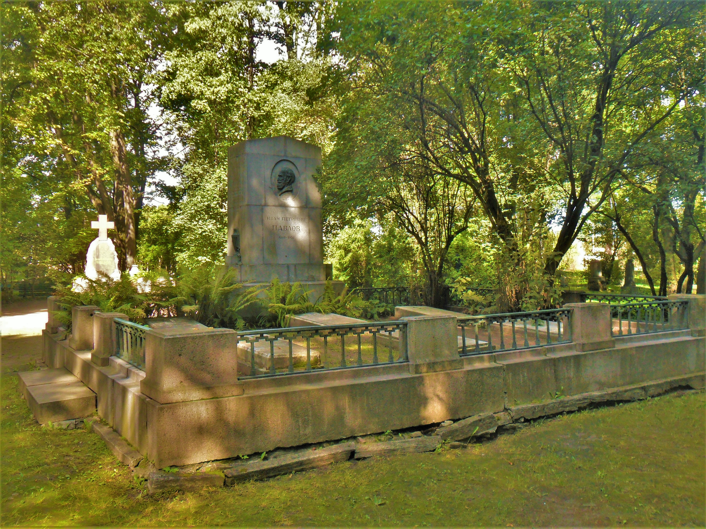

Origin
Ivan Petrovich Pavlov was born on September 14, 1849 in Ryazan, Russian Empire. His father, Pyotr Dmitrievich Pavlov, was an Orthodox priest, and his mother, Varvara Ivanovna Uspenskaya, was the daughter of a wealthy landowner. Ivan was the third child in a family of 11 children.
In 1860, the Pavlov family moved to Rybinsk, where Ivan began his education at the local gymnasium. In 1870 he entered the medical faculty of Moscow University and received his doctorate in medicine in 1879.
After graduating from university, Pavlov worked at various medical institutions, including the Institute of Experimental Medicine in St. Petersburg, where he conducted his famous experiments on conditioned reflexes in animals.
In 1890 he was elected a corresponding member of the Russian Academy of Sciences, and in 1904 he was appointed director of the Institute of Experimental Medicine in St. Petersburg. Pavlov died on February 27, 1936 in Leningrad (now St. Petersburg) at the age of 86.
Start
Ivan Petrovich Pavlov began his career in science and medicine at the end of the 19th century. After graduating from the medical faculty of Moscow University in 1879, he began working in a clinical hospital and was engaged in the treatment of patients. However, Pavlov was always interested in research in the field of physiology and neuroscience, and he began to engage in scientific activities.
In 1890, Pavlov was elected a corresponding member of the Russian Academy of Sciences. During his scientific career, he conducted research in the physiology of digestion, the nervous system and respiration. The most famous are his experiments on the study of conditioned reflexes in dogs, which led to the discovery of the concept of "conditioned reflex" and the outstanding work "Higher Nervous Activity".
With his research, Pavlov made a significant contribution to science and medicine. He received many scientific awards including the Nobel Prize in Physiology or Medicine in 1904 for his work on the physiology of digestion.
World famous
Ivan Petrovich Pavlov is an outstanding Russian scientist and physiologist who became known throughout the world for his work in the field of psychology and physiology. He received the Nobel Prize in Physiology or Medicine in 1904 for his discovery and study of conditioned reflexes. His theories and methods are still widely used in science and medicine.
Pavlov was also known for his work in organizing research and teaching young scientists. He created one of the largest and most famous laboratories in Russia, which attracted many young scientists from all over the world. In addition, he was a member of the Russian Academy of Sciences and many other scientific societies.
Pavlov left a huge legacy in science and medicine, and his research still helps to understand the mechanisms of the functioning of the human body. He became an important figure not only in Russian but also in world science and is recognized as one of the most influential scientists of the 20th century.
Great Legacy
Ivan Petrovich Pavlov was one of the most outstanding scientists of his time and made a huge contribution to the development of physiology and psychology. His work had a huge impact on many areas of science and is still used in medicine and psychology.
Pavlov's main achievement was the discovery of the concept of "conditioned reflex" and his research in the field of conditioned reflexes in dogs. He showed how animals can learn new conditioned reflexes and how this can be used to understand the nervous system and human psychology. This discovery led to the creation of new theories and research methods that are still used in science.
In addition to his scientific achievements, Pavlov was also known for his work in organizing scientific research and training young scientists. He created one of the largest and most famous laboratories in Russia, which became the center of world science and attracted many young scientists from all over the world.
With his scientific work and personal example, Pavlov made a huge contribution to the development of science and medicine and left an invaluable legacy that is still used and developed throughout the world.
End of Path
Ivan Petrovich Pavlov died on February 27, 1936 in Leningrad (now St. Petersburg) at the age of 86. His legacy lives on and develops in scientific circles around the world, and his research and discoveries continue to contribute to the understanding of human physiology and psychology. Today, Ivan Petrovich Pavlov is recognized as one of the greatest scientists in history and inspires many scientists around the world with his work and example.
